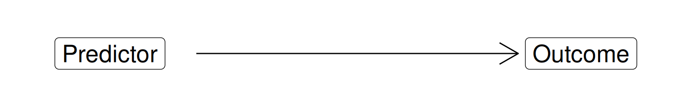
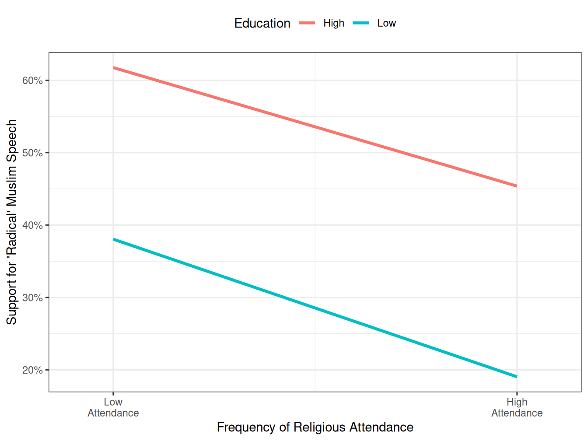
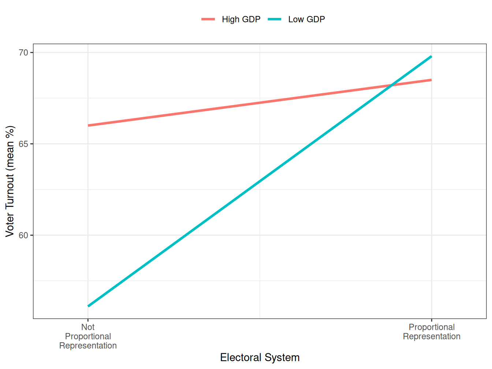
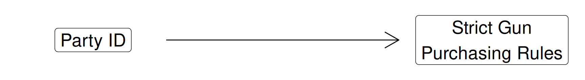
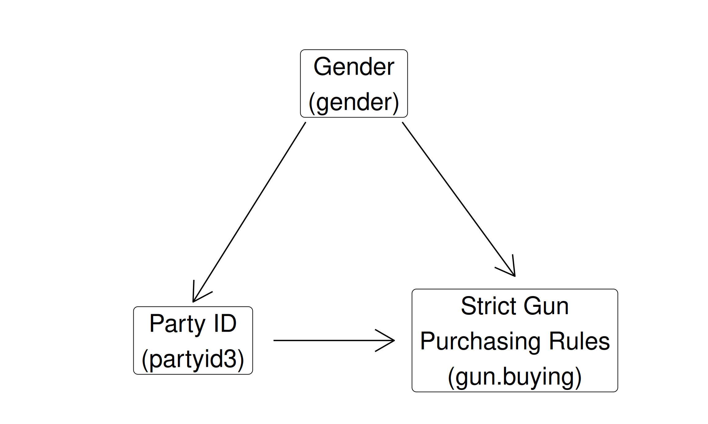
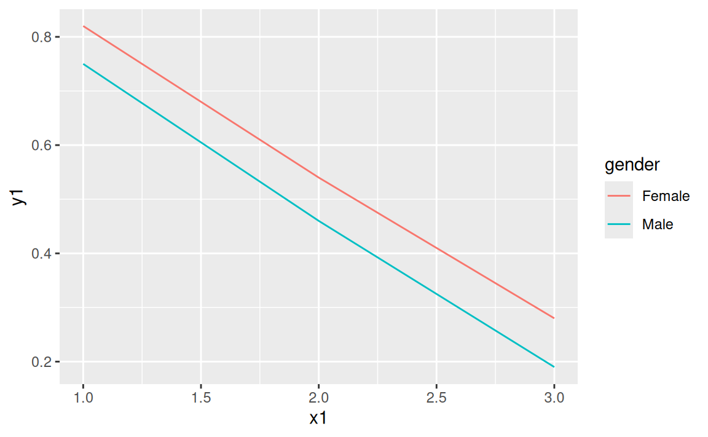
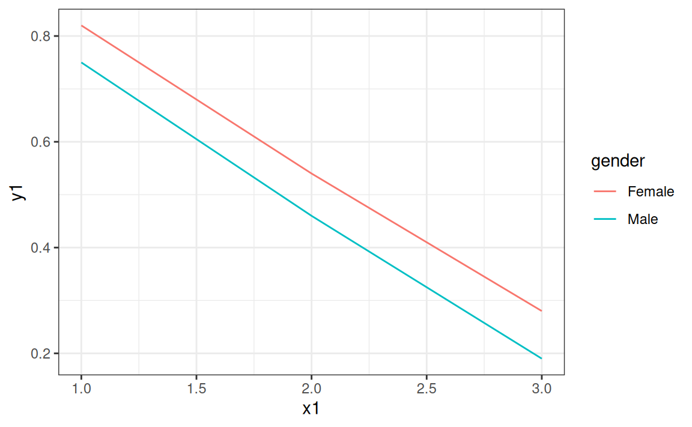
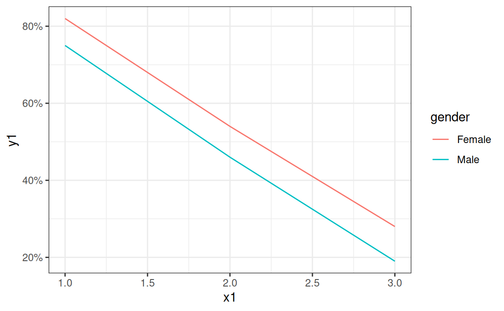
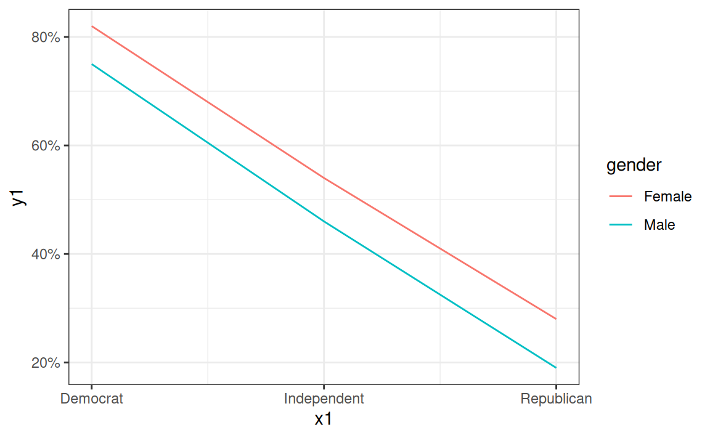
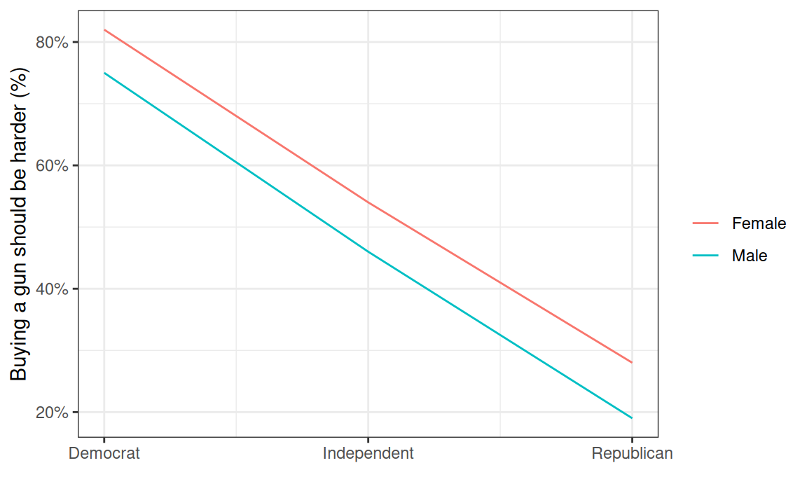

Today’s Agenda
Controlled Comparison Analysis
Justin Leinaweaver (Spring 2026)
Building a Causal Argument
“Causal inference refers to the process of drawing a conclusion that a specific treatment (i.e. intervention) was the ‘cause’ of the effect (or outcome) that was observed” (Frey 2018).

Remember, the aim of any scientific discipline is to generate new knowledge that explains why things happen in the world
We refer to this as explanatory or causal analysis
In short, we want to demonstrate that changes in our chosen predictors CAUSE a change in the outcome variable
And what is the fundamental problem with causal inference?
The Fundamental Problem of Causal Inference
“To measure causal effects, we need to compare the factual outcome with the counter-factual outcome, but we can never observe the counter-factual outcome ” (Llaudet and Imai 2023).
Don’t forget, this is a problem for ALL of science, not just the social sciences.
Whether its gravity, speed, biological reproduction or whatever else, we cannot observe actual counter-factuals
Even experimental methods do NOT actually solve this problem!
And how do experimental methods, e.g. using a randomized controlled trial (RCT), address this problem?
Randomized Controlled Trials (RCTs)
How does an RCT help us address the fundamental problem?
Random assignment means that even though both groups are composed of different individuals, the two groups are comparable to each other on average in all respects.
Random assignment means that the only thing that distinguishes the treatment group from the control group BESIDES THE TREATMENT is chance.
So, with random assignment we ASSUME the groups are identical on average which lets us pretend the outcome for group 1 represents the counterfactual for group 2
Last class we explored the conceptual tools you need for dealing with situations where you cannot run an RCT
Making Controlled Comparisons
We develop identification strategies that identify the confounders in our observational relationships.
This is what the textbook refers to as a “controlled comparison” (p160)
The hope is that by controlling for all of the confounders we get to a place where the treatment and control groups are identical on average
Any questions on our work from last class on making controlled comparisons?
SLIDE : Seems like a good time to review the assignment for today!
Pollock & Edwards Exercise 4: Types of Relationship
Does frequent attendance at religious services reduce tolerance for allowing “radical” Muslim speech when controlling for education?
Low Religion
High Religion
Low Religion
High Religion
Allow Speech
38%
19%
62%
45%
(121)
(44)
(226)
(162)
Forbid Speech
62%
81%
38%
55%
(197)
(187)
(140)
(195)
Did everybody calculate these percentages?
DV on the rows, predictor levels on the columns?
So, does the data support this hypothesis?
Now tell me about the partial relationship here
Does frequent attendance at religious services reduce tolerance for allowing “radical” Muslim speech when controlling for education?

Was everybody able to translate the table into the line chart?
Key for setting this up is the same as usual rules
Outcome on y-axis, predictor on x-axis
Control variable defines two different lines
Make sense?
The visualization is SO much easier to interpret, right?
SLIDE : Exercise 5
Pollock & Edwards Exercise 5
Do countries with proportional representation electoral systems have higher levels of voter turnout (controlling for level of development)?
Not PR
63.1
56.1
66.0
PR
68.7
69.8
68.5
Overall
NA
61.6
67.4
Everybody make this table (or something like it)?
NOTE: In the case of an interval outcome variable this isn’t technically a cross-tab
This shows the control variable levels on the columns but there is no levels for the main predictor, just a mean value
Make sense?
Does the data support this hypothesis?
This version I’ve made displays both the zero-order effect and the partial effect.
Pollock & Edwards Exercise 5
Do countries with proportional representation electoral systems have higher levels of voter turnout (controlling for level of development)?
Overall
Low GDP
High GDP
Not PR
63.1
56.1
66.0
PR
68.7
69.8
68.5
Overall
NA
61.6
67.4
The zero-order effect is the results of a simple bivariate analysis
e.g. a description of the relationship between two variables
The partial effect is the result of a controlled comparison
e.g. a description of the relationship between two variables while controlling for a third variable
Which of these should you present when testing a hypothesis?
So, is this a spuriousness, additive, or interactive relationship?
Pollock & Edwards Exercise 5
Do countries with proportional representation electoral systems have higher levels of voter turnout (controlling for level of development)?

Again, we follow the usual rules of visualizing data
The relationship between electoral systems (PR vs. non-PR) and turnout appears interactive.
PR systems are associated with higher turnout across both low and high GDP countries, BUT
The magnitude of the effect is WAY stronger in poorer countries than in rich ones!
This also shows why the claim in Part D is so wrong!
Instituting PR in poorer countries may have substantially larger effects on voter turnout!
Overall, how did we do with these exercises?
SLIDE : Alright let’s learn the code we need to perform controlled comparisons in R
Making Controlled Comparisons
Add to your notes:
# Categorical x Categorical: Estimating partial effects # Step 1: Split your sample by levels of the control variable # New tool: subset() # Step 2: Generate cross-tabs for each subset # Step 3: Present the results in a polished table # New tool: crosstable() # Step 4: Present the results in a polished visualization # New tool: geom_line() # Access the built-in data library (tidyverse)
Everybody copy these notes into their new R file
From title slide: Making_Controlled_Comparisons-Cat_x_Cat.R
Today our focus will be on estimating partial effects for the relationship between two categorical variables
SLIDE : As always, let’s begin with a built-in data example to learn the code
Making Controlled Comparisons: Categorical x Categorical
How do car manufacturers change their fleets over time while controlling for factory limitations?
Read question
I’m interested in how auto manufacturers adapt their fleets across time
How do they adapt to market demands, new tech, government regulations, etc.?
I hear cars keep getting bigger and bigger so let’s see if that’s evident in this data
I’m proposing we control for the drive train because I suspect each expensive factory that’s already built is limited in the classes of cars it can build
Big picture, everybody ok with this as a toy question to practice the code?
In other words, I don’t want you to agonize over the logic of this theory
Now, we always begin our analyses with the zero-order effects
Remind me, what is a zero-order effect?
(Bivariate analysis: Simple description of the relationship between two variables)
Let’s first check the zero-order effects
Everybody make a proportionate cross-tabs focused on explaining class using year
How do car manufacturers change their fleets over time while controlling for factory limitations?
proportions (table (mpg$ class, mpg$ year), margin = 2 )
1999 2008
2seater 0.01709402 0.02564103
compact 0.21367521 0.18803419
midsize 0.17094017 0.17948718
minivan 0.05128205 0.04273504
pickup 0.13675214 0.14529915
subcompact 0.16239316 0.13675214
suv 0.24786325 0.28205128
Everybody get this?
So, how much change do we see in the car fleets across time?
More pick-ups, more suvs, fewer compacts and subcompacts
SLIDE : Now let’s answer the question using partial effects
Making Controlled Comparisons: Categorical x Categorical
Step 1: Split the sample into subsets by levels of the control variable
# ID the levels table (mpg$ drv)# Subset 1: Four wheel drive cars <- subset (mpg, drv == "4" )# Subset 2: Front wheel drive cars <- subset (mpg, drv == "f" )# Subset 3: Rear wheel drive cars <- subset (mpg, drv == "r" )
In this case I am assuming that a factory designed to make front wheel drive cars cannot be cheaply or easily reconfigured to make four wheel drive cars
Making Controlled Comparisons: Categorical x Categorical
Step 2: Create a cross-tab for each subset
# Create a cross-tab for each subset proportions (table (mpg_4w$ class, mpg_4w$ year), margin = 2 )
1999 2008
compact 0.08163265 0.14814815
midsize 0.02040816 0.03703704
pickup 0.32653061 0.31481481
subcompact 0.08163265 0.00000000
suv 0.48979592 0.50000000
proportions (table (mpg_fw$ class, mpg_fw$ year), margin = 2 )
1999 2008
compact 0.3684211 0.2857143
midsize 0.3333333 0.3877551
minivan 0.1052632 0.1020408
subcompact 0.1929825 0.2244898
proportions (table (mpg_rw$ class, mpg_rw$ year), margin = 2 )
1999 2008
2seater 0.1818182 0.2142857
subcompact 0.3636364 0.3571429
suv 0.4545455 0.4285714
With the subsets created for each level of the categorical variable, now we remake our tables using each subset separately
THIS is the process for making partial effects cross-tabs (e.g. with two categorical variables)
Forget the car details, does the approach make sense?
To include this table in a report you’d have to build the table by hand using these results
The key for me is that you understand the process you need for doing this in base R functions
table(), proportions() and subset() should always work
HOWEVER, there are MANY different ways to automate this process in R
SLIDE : I’m going to show you one of them now, BUT I make ZERO promises that this project will always exist
# Install the package ONE TIME install.packages ("crosstable" )# Load the package when you want to use it library (crosstable)
crosstable(data, cols, by)
as_flextable()
Polishes a crosstable object for printing
Everybody install the crosstable package
This gives us two useful functions for our work making controlled comparisons
SLIDE : Let’s put this to work!
# Univariate table crosstable (mpg, cols = class) |> as_flextable ()
label
variable
value
class
2seater
5 (2.14%)
compact
47 (20.09%)
midsize
41 (17.52%)
minivan
11 (4.70%)
pickup
33 (14.10%)
subcompact
35 (14.96%)
suv
62 (26.50%)
Three new R functions here
crosstable makes the cross tabs
as_flextable makes it look good for printing
And the pipe (|>)
The pipe is an AWESOME piece of code that says take whatever is produced on one line and send it to the next function
Crosstable applied to one categorical variable gives you a univariate count AND the proportions
Here we start by visualizing the distribution of the outcome, class variable
SLIDE : The bivariate case - a cross-tab
# Bivariate table (row %) crosstable (mpg, cols = class, by = year) |> as_flextable ()
label
variable
year
1999
2008
class
2seater
2 (40.00%)
3 (60.00%)
compact
25 (53.19%)
22 (46.81%)
midsize
20 (48.78%)
21 (51.22%)
minivan
6 (54.55%)
5 (45.45%)
pickup
16 (48.48%)
17 (51.52%)
subcompact
19 (54.29%)
16 (45.71%)
suv
29 (46.77%)
33 (53.23%)
Here we add “year” as our predictor using the “by” argument
NOTE: By default crosstable calculates %s by row, NOT column
A problem for us if we follow the textbook rules that need column %s
SLIDE : The code to change this to column is annoying
# Bivariate table (column %) crosstable (mpg, cols = class, by = year, percent_pattern = "{p_col} ({n})" ) |> as_flextable ()
label
variable
year
1999
2008
class
2seater
1.71% (2)
2.56% (3)
compact
21.37% (25)
18.80% (22)
midsize
17.09% (20)
17.95% (21)
minivan
5.13% (6)
4.27% (5)
pickup
13.68% (16)
14.53% (17)
subcompact
16.24% (19)
13.68% (16)
suv
24.79% (29)
28.21% (33)
Here I am asking the code to give us two things per cell, BOTH the count and the %
SLIDE : But this is too many places after the decimal!
# Bivariate table (column %), change % decimals crosstable (mpg, cols = class, by = year, percent_pattern = "{p_col} ({n})" ,percent_digits = 0 ) |> as_flextable ()
label
variable
year
1999
2008
class
2seater
2% (2)
3% (3)
compact
21% (25)
19% (22)
midsize
17% (20)
18% (21)
minivan
5% (6)
4% (5)
pickup
14% (16)
15% (17)
subcompact
16% (19)
14% (16)
suv
25% (29)
28% (33)
I appreciate how easy this code is and that it produces a table with BOTH the counts and %s per cell
Ok, this has brought us back to our zero-order effects
Step 3: Present a polished table of the partial effects
# Bivariate table, partial effects crosstable (mpg, cols = class, by = c (year, drv), percent_pattern = "{p_col} ({n})" ,percent_digits = 0 ) |> as_flextable ()
drv
4
f
r
year
1999
2008
1999
2008
1999
2008
class
2seater
0% (0)
0% (0)
0% (0)
0% (0)
18% (2)
21% (3)
compact
8% (4)
15% (8)
37% (21)
29% (14)
0% (0)
0% (0)
midsize
2% (1)
4% (2)
33% (19)
39% (19)
0% (0)
0% (0)
minivan
0% (0)
0% (0)
11% (6)
10% (5)
0% (0)
0% (0)
pickup
33% (16)
31% (17)
0% (0)
0% (0)
0% (0)
0% (0)
subcompact
8% (4)
0% (0)
19% (11)
22% (11)
36% (4)
36% (5)
suv
49% (24)
50% (27)
0% (0)
0% (0)
45% (5)
43% (6)
Here we specify two variables as a list in the “by” argument
The second variable in this list is the control
So, does our controlled comparison suggest that auto manufacturers are adapting their fleets over time?
Questions on the crosstable code?
As I said, the base R subset approach should ALWAYS work
You simply make subsets and run table on each one
This crosstable works as long as the developer keeps maintaining the package
The bad news is that most add-on packages eventually die
The good news is there are MANY more packages out there for making fancy tables
Don’t be afraid to explore
SLIDE : Let’s practice!
Does party ID predict policy preferences on the rules for purchasing firearms?

There are a lot of claims out there regarding the viewpoints of Americans on the rules around buying guns
I’d like to know if the divide across the parties is as sharp as the conventional wisdom indicates
SLIDE : BUT, I think there is a clear confounder in this relationship
Does party ID predict policy preferences on the rules for purchasing firearms?

The research indicates a strong causal mechanism from gender to both party identification AND gun policy preferences
Alright research team, here is your task
While they work they may trip over what to do about missing data, let them finish their tables and then we’ll address it
SLIDE : Results
Does party ID predict policy preferences on the rules for purchasing firearms?
label
variable
PRE: Party ID, 3 categories
1. Democrat
2. Independent
3. Republican
NA
POST: Should federal government make it more difficult or easier to buy a gun
1. More difficult
79% (2036)
50% (1246)
23% (528)
13
2. Easier
2% (58)
8% (191)
10% (237)
0
3. Keep these rules about the same
18% (475)
43% (1067)
66% (1516)
8
NA
292
318
281
14
# Remove the missing data # Step 1: Subset of the data with only the variables we need <- select (.data = anes, gun.buying, partyid3, gender)# Step 2: Remove responses with NAs <- na.omit (anes2)# Check missing data nrow (anes)
label
variable
partyid3
1. Democrat
2. Independent
3. Republican
gun.buying
1. More difficult
79% (2028)
50% (1234)
23% (528)
2. Easier
2% (57)
8% (190)
10% (233)
3. Keep these rules about the same
19% (475)
43% (1055)
67% (1511)
gender
1. Male
2. Female
partyid3
1. Democrat
2. Independent
3. Republican
1. Democrat
2. Independent
3. Republican
gun.buying
1. More difficult
75% (726)
46% (572)
19% (211)
82% (1302)
54% (662)
28% (317)
2. Easier
3% (27)
9% (115)
13% (143)
2% (30)
6% (75)
8% (90)
3. Keep these rules about the same
22% (210)
45% (568)
68% (768)
17% (265)
40% (487)
65% (743)
Step through missing data problem and cleaning option
Zero-order effects
Is there a difference in preferences regarding gun purchasing rules across the parties?
Partial Effects
Is there a difference in preferences regarding gun purchasing rules across the parties when controlling for gender?
Is this a spurious, an additive, or an interactive effect when controlling for gender?
(SLIDE : Let’s visualize it and check!)
Visualize Partial Effects
Step 1: Copy the partial effects into a new object
# Create a dataset: tribble() <- tribble (~ gender, ~ x1, ~ y1,"Male" , 1 , .75 ,"Male" , 2 , .46 ,"Male" , 3 , .19 ,"Female" , 1 , .82 ,"Female" , 2 , .54 ,"Female" , 3 , .28
# A tibble: 6 × 3
gender x1 y1
<chr> <dbl> <dbl>
1 Male 1 0.75
2 Male 2 0.46
3 Male 3 0.19
4 Female 1 0.82
5 Female 2 0.54
6 Female 3 0.28
Visualize Partial Effects
Step 2: Make (and polish) a line plot
ggplot (new1, aes (x = x1, y = y1, color = gender)) + geom_line ()

Step 2: Make (and polish) a line plot
ggplot (new1, aes (x = x1, y = y1, color = gender)) + geom_line () + theme_bw ()

Step 2: Make (and polish) a line plot
ggplot (new1, aes (x = x1, y = y1, color = gender)) + geom_line () + theme_bw () + scale_y_continuous (labels = scales:: percent_format ())

Step 2: Make (and polish) a line plot
ggplot (new1, aes (x = x1, y = y1, color = gender)) + geom_line () + theme_bw () + scale_y_continuous (labels = scales:: percent_format ()) + scale_x_continuous (breaks = c (1 , 2 , 3 ), labels = c ("Democrat" , "Independent" , "Republican" ))

Step 2: Make (and polish) a line plot
ggplot (new1, aes (x = x1, y = y1, color = gender)) + geom_line () + theme_bw () + scale_y_continuous (labels = scales:: percent_format ()) + scale_x_continuous (breaks = c (1 , 2 , 3 ), labels = c ("Democrat" , "Independent" , "Republican" )) + labs (x = "" , y = "Buying a gun should be harder (%)" , color = "" )

With our polished visualization in hand, now you can answer the question.
SLIDE : Our work today
Making Controlled Comparisons
If categorical x categorical
Step 1: Split your sample by levels of the control variable
Step 2: Generate cross-tabs for each subset
Step 3: Polish tables with crosstable()
Step 4: Visualize partial effects with geom_line()
Does the subset approach to making controlled comparisons make sense?
SLIDE : For next class we need some practice!
For Next Class
Does the strength of Americans’ religious convictions (religion.imp) predict their support for the death penalty (death.penalty) when controlling for party identification (partyid3)?
Table 1: Polished cross-tab of the zero-order effects
Table 2: Polished cross-tab of the partial effects
Figure 1: Make a line plot of the partial effects calculated in Step 2 above (% “Favor Strongly” across the levels of religion.imp)
Canvas Assignment: Practice Making Controlled Comparisons (categorical x categorical)
Use the ANES (2020) data to answer the following question: Does the strength of Americans’ religious convictions (religion.imp) predict their support for the death penalty (death.penalty) when controlling for party identification (partyid3)?
Table 1: Submit a polished cross-tab that evaluates if religious importance predicts support for the death penalty (zero-order effects)
Table 2: Submit a polished cross-tab that evaluates if religious importance predicts support for the death penalty while controlling for party ID (partial effects)
Figure 1: Visualize the results in Step 2 above with a line plot tracking those who “favor strongly” the death penalty across the levels of religious importance. You should have three lines, one for each party ID in the dataset. Be sure to categorize it as a spurious, additive or interactive effect.